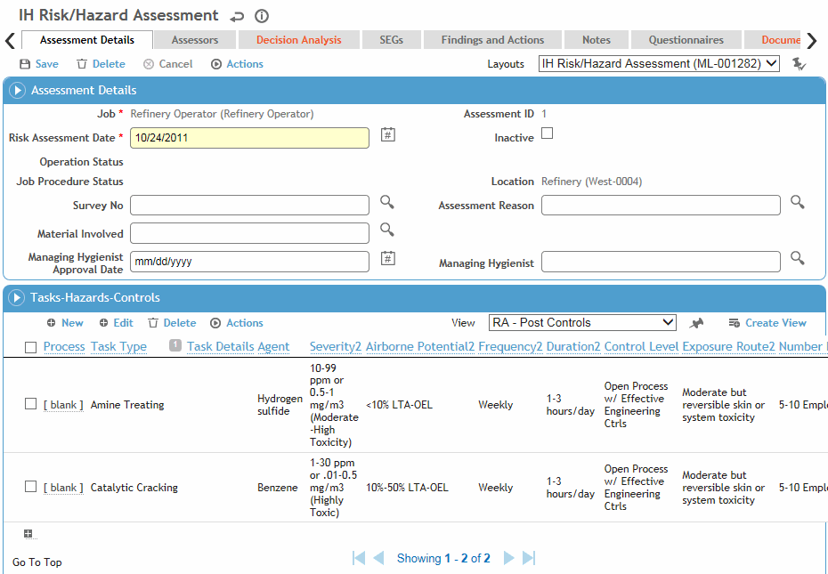
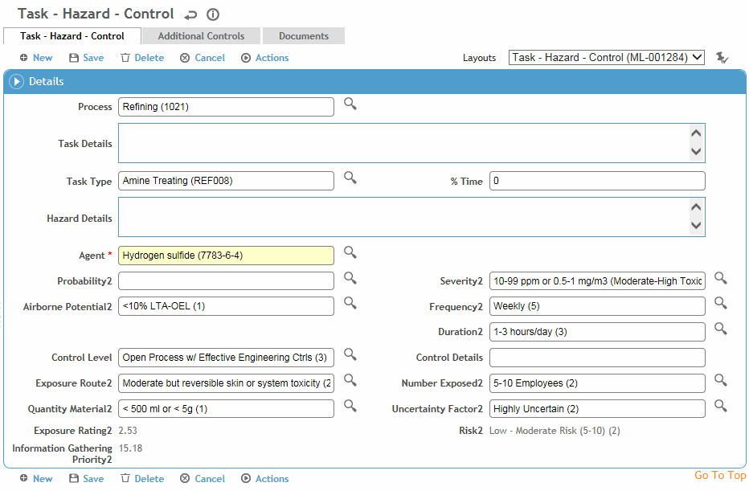
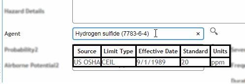
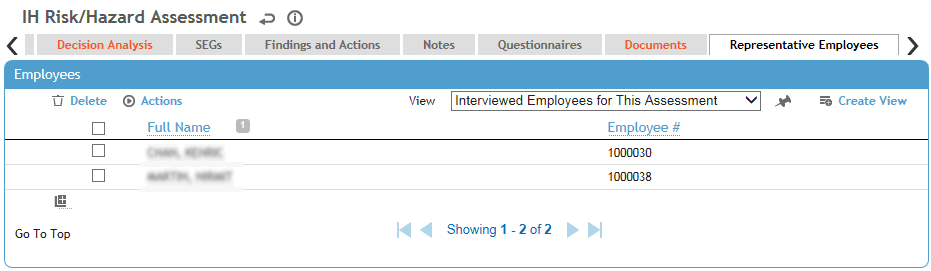

Risk assessments can also be imported using the Import
Utility (see Importing
Text or XML Files into Cority Tables).
If you are updating an existing record, but the matching RiskAssessmentID
is not found and enough data is provided, Cority
will create a new record.
If you are importing a new risk assessment and there is no active risk
assessment, the new one will become the active risk assessment.
If you are importing a new risk assessment and there is an active risk
assessment but the new one has a more recent date, the active risk assessment
will become inactive and the new, imported one will become active.
In the Industrial Hygiene menu, click Risk Assessment/JHA. All jobs whose Assessment Types match the Cloud you started from are listed.
Click New to create a new assessment, or click a link to view an assessment..

There can only be one active assessment per job per
module.
If you want to create a different
version of the job’s assessment information but retain the original, choose
Actions»Clone and Inactivate. The original
assessment is marked Inactive, and the job information, assessment
reason, linked findings and actions, and information in the Tasks-Hazards-Controls
section are copied into a new active assessment record. If the Parent field is selected on the original
assessment, on the cloned record it will display the Job value
from the initial risk assessment record, followed by the Risk
Assessment ID in parentheses.
If you want to copy the current assessment
to a different job, choose Actions»Copy
and Create New Risk Assessment. You are prompted to select
the job the copied assessment information should be linked to. The
job information, assessment reason, and information in the Tasks-Hazards-Controls
section is copied into a new active assessment record for that job.
Any linked findings and actions are not copied over. If the selected
job does not have any associated Risk Assessment
Date, the Risk Assessment ID for
the new record will be 1. If the job had an existing risk assessment
record (and Risk Assessment Date), the
Risk Assessment ID for the new
assessment record will be the next number in the sequence for that
job/task.
On the Assessment Details tab:
Select the related Survey,
and the Material Involved.
Tip: If the job involves multiple agents, you can define the agent at
the task level instead.
Select the Managing Hygienist (the look-up for this field is limited to users defined as “IHUser” and “Hygienist”, and IH User Type “Managing Hygienist”). Identify all other persons involved in this assessment on the Assessors tab.
In the Tasks-Hazards-Controls section
of the Assessment Details tab, capture the processes and tasks
as well as the potential hazards and recommended controls.
If a Safety Data Sheet is associated to an agent
or product (in the AgentHazard look-up
table), you will see an SDS link to the left of the task. Click the
link to open the SDS in a separate browser window. An SDS can be added
to an agent or a product; if no SDS is linked to the selected agent,
the link will open the SDS for the product instead.
Streamline your data entry by setting up relational tables and system settings that filter available options based on your selections. For example: assessment category > agent group >agent > special notation. Similarly, the probability and severity chosen determine which risk factor qualifiers are available. Contact your Cority representative for assistance.
Create a separate record for each hazard. A hazard must be linked to at least one process or task.
To copy a risk assessment record, select the record and choose Actions»Copy Process/Task. A new record is created with the same data; open the link to record any new or different information.
A hazard record may be created automatically if a choice in a related questionnaire is identified as a risk factor. Contact your Cority representative for assistance setting up this custom functionality.
You can import tasks-hazard-controls records using the Import Utility (see Importing Text or XML Files into Cority Tables).
If multiple records have the same Agent, Process, and Task Type, select them and choose Actions»Merge Risk Records. The records will be merged into the record with the lowest Reference ID, preserving all data in that record but merging the Task Details and Hazard Details from each merged record.
If added to a custom layout, you can choose Actions»View Chemical Inventory to view any chemical products that have a current inventory value and that match the GDDLOFB criteria selected on the risk assessment record. If you select one or more products, the corresponding record(s) will display in the Tasks-Hazards-Controls section of the risk assessment record.
To add a task, click New.

For a new record, enter the appropriate Process and/or Task Details and Task Type. Enter the % Time that this task constitutes of the job.
Capture information about the Agent involved, including the Probability of the hazard occurring, the potential Severity of resulting injury or illness, the Quantity of material involved, length of exposure (Duration, Frequency), Route of exposure (i.e. how the employee comes into contact with the hazard (e.g. ingestion, skin, etc.), and the number of employees who would potentially be exposed.
If you plan to use Decision Analysis, the post control fields (those ending with 2) must be populated.
Hover over the selected Agent to
view its OELs (a Jurisdiction must be selected on the record).

The Exposure Rating and Risk are calculated based the formula set by the administrator in the Risk Settings (see Working with Risk Settings). Optionally, you can run a statistical analysis query on a hazard; see Running Traditional and Bayesian Statistical Analysis.
Record the recommended controls on the Additional Controls tab.
Optionally, attach any supporting documents or images on the Documents tab. A thumbnail of the document/image will be shown in the Tasks-Hazards-Controls section of the Assessment Details tab. If you attached an image, it will be displayed in the JHA Report.
Click Save to return to the Risk Assessment form.
To print a Job Hazard Analysis Report, choose Actions»Generate JHA on the Assessment Details tab. To just print the assessment form (without the buttons and tabs showing), choose Actions»Print Assessment - the RiskAssessmentId must be populated on the record. The risk matrix will print in color (but will not include the task details shown on the enhanced matrix).
The Decision Analysis tab displays results of any Lognorm queries. For more information, see Running Traditional and Bayesian Statistical Analysis.
The SEGs tab is a read-only view of the SEGs associated with the job; click a link to view full details of the SEG.
The Monitoring Samples and Noise Monitoring Samples tabs display all samples that are linked to the risk assessment. You can create and edit samples from this tab (see Recording a Monitoring Sample Record or Recording a Noise Monitoring Sample Record).
The Findings and Actions tab provides views for all findings and actions linked to a job, risk assessment, and/or job hazard that are recommended (or required) to protect workers from hazards, such as choosing appropriate protective equipment, and ensuring that workers receive the equipment needed.
For information about recording a finding and its actions, see Recording a New Finding.
To view an action’s attachment, open the finding and choose Actions»Open Document.
On the Notes tab, enter any notes about the assessment. For more information, see Adding Notes to a Form.
The Forms tab displays all forms in the PDFForm look-up table that have been linked to the risk assessment module. Open and complete these as required.
The Questionnaires tab displays all questionnaires associated with any of this job’s assessments (active and inactive, from all applicable Clouds) and allows you to associate questionnaires with a record. For information about creating and administering questionnaires, see Questionnaires.
The Documents tab displays all documents associated with any of this job’s assessments (active and inactive, from all applicable Clouds) and allows you to link external files containing background or supporting information to an assessment record for easy access to the file. For more information, see Linking or Importing a Document.
Use the Representative Employees tab to record any representative employees who may be affected by the operation assessed.
